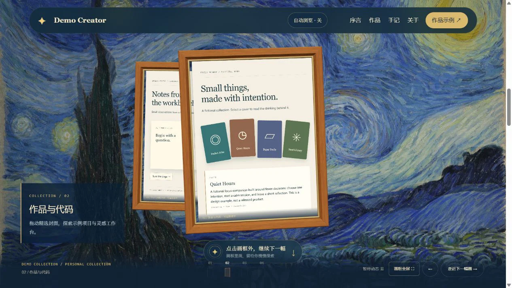

极简名片
名字 + 一句人设 + 一个「先聊聊」按钮，信息极轻，专为让人快速联系你。
适合创业者、自由职业者、服务型个人品牌——只需要客户知道「我在做什么、怎么找我」。
- 业务关键词直接放进网站标题，客户 1 秒看懂你在做什么
- 「先聊聊」式按钮专为私聊成交设计，不用先运营内容
- 信息量最小，搭建最快，改起来也最省事
mc9world.com
站长 Mike Lam · X @MikeLammm
客户想合作、HR 想面试你、粉丝想认识你——大家的第一步都是搜你的名字。搜出来的是一堆平台的碎片主页，还是一个把「你是谁、做过什么、怎么找你」一次讲清的完整主页，第一印象完全不同。一个自己的网站，等于把搜索结果的第一页捏回自己手里。
微博、知乎、X、小红书——你的内容、粉丝、人设，全都存在别人的服务器上。算法一改，你的内容可能就没人看了；平台出一个政策，你的账号可能就没了。而挂在你自己的域名下的网站不一样：只要域名在续费，它就一直在，谁也删不掉，谁也限不了流。
AI 几秒钟就能写一篇文章、画一张图、搭一个网站。当所有人都能廉价地产出内容，内容本身就不稀奇了——稀缺的是一个「真实、可信、长期在做这件事的人」。一个稳定存在的个人网站，就是证明这一点最硬的方式：别人说「我有十万粉丝」，你说「这是我自己的一亩三分地」，这两句话的分量不一样。
简历是静态清单，一页纸装不下一个人；名片递出去，联系就断了。个人网站随时能更新、随时能被搜到：求职、接单、社交，最终都指向同一个属于你的地址。它是所有场合的母版——你在一个地方把「自己」讲清楚，到处都能引用。
不买服务器、不碰运维：网站免费托管、全球加速、自动 HTTPS，可以绑定你自己的域名。内容由 AI 按你的资料生成，你不用写一行代码。从「我想要个网站」到「网站能打开」，资料齐了大约三天。
下面 13 个包含真实个人网站与可复用示例模板。每个都标了适合谁、好在哪，以及源码或站长信息；虚构演示已单独说明。
名字 + 一句人设 + 一个「先聊聊」按钮，信息极轻，专为让人快速联系你。
适合创业者、自由职业者、服务型个人品牌——只需要客户知道「我在做什么、怎么找我」。

项目 / 博客 / 技能 / 精华帖子分层陈列，把「你做过什么、正在做什么」一次讲清。
适合独立开发者、内容创作者——有作品有内容，需要一个撑得起的主页。

把你在各平台的干货沉淀成「实战手册」列表，内容即产品，顺便导流社群。
适合教程 / 科普作者、社群主理人——想用内容留住人、再把人引到私域。

用真实产品案例 + 工作流能力标签证明专业度，每个产品都讲清「解决什么问题」。
适合AI 产品开发者、自动化工具作者——用作品当简历，让客户秒懂你会什么。

3D 开场抓眼球，服务 + 作品 + 开源 + 能力四块陈列，中英双语，品牌感拉满。
适合设计师、独立工作室、AI 工作流顾问——需要「一眼高级」来抬身价。

开机动画 + 点得动的像素世界，项目、能力、案例、人脉图谱全藏在场景里，玩着玩着就记住了你。
适合AI Builder、自动化工具作者、想让人眼前一亮的极客——要的是记忆点，不是一页简历。

数字雨 + 点阵大字开场，项目、文章、AI 工作台按编号陈列，公开记录一个工程师 ALL IN AI 的全过程。
适合正在转型、正在深耕的工程师和开发者——把成长过程摊开来做信任资产。

以室内设计为职业根基，展示造境与 AI 订阅雷达，并直达室内设计、内容与社媒合作。
适合有明确专业主业、同时在构建数字产品或服务的独立设计师、工作室负责人和跨界创作者。

月球探索视觉开场，把 AI 服务、公开作品和合作过程组织成一条可读、可验证的个人叙事。
适合AI 顾问、自动化服务者和正在公开构建的独立创作者——既要讲清服务能力，也要把作品变成信任资产。

把独立 App、网页游戏、连载小说和日常观察放进一座纸张便签式的小站，记录从零学习到持续做出作品的过程。
适合同时做产品、写作和日常内容的独立开发者与创作者——希望用一个有个人温度的网站集中展示多种作品。

WebGL 波动光场开场，通过个人介绍、项目列表与案例详情，展示持续构建 AI 工作流的实践。
适合希望同时展示作品和思考过程的 AI Builder、独立开发者与创作者。

撕下一张花园门票，进入由个人档案、真实项目、工具与成长经历组成的手绘小世界。
适合正在积累作品与经历的学生开发者、AI Builder 和独立开发者——想公开记录成长，也想让个人站拥有鲜明记忆点。

在上面 13 个案例与模板里选一个最像你的。拿不准就直说「我想要 A 的排版 + B 的感觉」，混合也可以。
三样东西：一句话介绍你自己、3~5 个项目或作品、想放上去的联系方式。发我就行，格式不限，零散也行。
资料齐了大约三天交付：内容按你的资料填好，网站部署上线，改到满意。想绑自己的独立域名也可以，域名费用自付，配置我来。
报价按风格、内容量和是否要独立域名浮动——先聊需求、看试做效果，再谈价格，不合适随时停。
能。你只需要提供资料，建站、部署、域名配置全部由我完成。上线之后想改内容，把新的发我就行。
不需要。网站免费托管在 Cloudflare Pages：全球加速、自动 HTTPS，不花一分钱托管费。想绑定自己的域名（比如 yourname.com）也可以，域名费用自付，配置我来。
资料齐了大约三天交付，改到满意为止。加急可以聊。
按你选的风格、内容量和是否绑定独立域名浮动，先聊需求再报价，先看试做效果再谈价格。
挑一个喜欢的风格，带上你的资料来找我：一句话介绍 + 3~5 个作品 + 联系方式。
发邮件开始